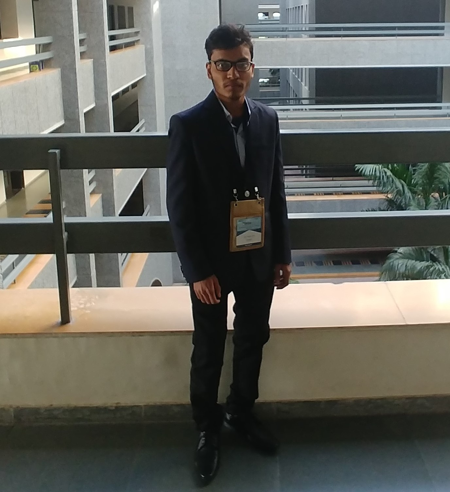

My current areas of interest are Embedded systems, Internet of Things, Image Processing, Unmanned Aerial Vehicles
National Institute of Technology Durgapur 2016 - Present
Department of Electronics and Communication Engineering 8.94 CGPA
Higher Secondary School 2014-2016
Jawahar Navodaya Vidyalaya,Gopalpur, Birbhum 95.4%
Secondary School 2014
Jawahar Navodaya Vidyalaya,Gopalpur, Birbhum 93.1%
M V Chauhan Student Paper Contest, IEEE INDICON 2019 - Argha Sen, Monsij Biswal, Shreyan Dutta Intelligent Traffic Routing Based on Real-Time Congestion Analysis (Accepted, yet to be published)
Abstract: The problem of traffic congestion has led to several issues like an increase in carbon dioxide emission including the inability to route emergency vehicles on a priority. Hence we aim to find an optimized approach, allocating resources based on the traffic condition at that particular instant. This could be realized by analysing the traffic data relayed by device nodes present all over the city in a real-time environment. The node is a cloud-linked camera-integrated MPU equipped with GSM communication. The captured video frames are processed which is then analysed collectively to suggest the most appropriate route to the vehicles.
International Workshop on Societal Computing for the Internet of Things & You [ SoCIeTY 2020 ] - Praveen Sharma, Suraj Gupta, Argha Sen, Tanmay De, Sujoy Saha Exploring Collision Avoidance during Communication Over Sound for Healthy Environment (Accepted, yet to be published)
Abstract: The problem of traffic congestion has led to several issues like an increase in carbon dioxide emission including the inability to route emergency vehicles on a priority. Hence we aim to find an optimized approach, allocating resources based on the traffic condition at that particular instant. This could be realized by analysing the traffic data relayed by device nodes present all over the city in a real-time environment. The node is a cloud-linked camera-integrated MPU equipped with GSM communication. The captured video frames are processed which is then analysed collectively to suggest the most appropriate route to the vehicles.
Summer Intern at Elctro Optical Tracking System Laboratory Integrated Test Range Chandipur, DRDO
3D Tracking and Geo-Localization of a target using Unmanned Aerial Vehicles May 2019 - July 2019
Abstract: Optical tracking and triangulation of target objectsare quite challenging when the object is moving in the three dimensions. The task can be accomplished through Electro-Optical Tracking Systems. But ground based tracking systems can only track objects that are flying at high altitudes. For this reason, our project proposes a system that successfully localizes, tracks and triangulates both air-borne and ground-borne target objects, using the concept of aerial Electro-optical tracking systems, via the use of UAVs, namely quad-copters. Our project uses two quadcopters, individually equipped with an on-board camera and a companion computer that tracks a desired target object using image processing and sends the data to the ground station. The received data from the two drones are used to triangulate the objects location in real time at the ground station,along with virtual visualization of the entire triangulation in a 3D application and a User Interface application.
Winter Intern at Mobile Computing and Network research Group LAB NIT Durgapur
1. Aerial Environment Sensing and Traffic Surveillance using sensor enabled Drone/UAV Dec 2018 - Jan 2019
The rise in the environmental pollution and degradation of air quality has dragged the attention of researchers and innovators. Due to the high cost Air Quality Monitoring Station(AQMS) can not be placed densely. However, spatial and temporal resolution of data from ground, manned aircraft and satellite measurements is relatively low and often inadequate for local and regional applications. Furthermore, taking measurements close to pollutant sources may not always be possible and it could be too dangerous or risky for manned aircraft to fly close to the ground. Together, these reasons promote the use of small, lightweight UAVs for a range of applications, including atmospheric measurements. To get fine grained data, we have developed an Environment monitoring device using some pollutant sensors and build a model to predict the pollutants’ concentration. UAVs cover large areas and can monitor remote, dangerous or difficult to access locations, increasing operational flexibility and resolution over land-based methods. Parallel to Environmental pollution, traffic congestion is a serious problem in a fast-paced world, especially in metropolitans. People lose hours of their precious time by waiting in traffic. We aim to find an optimized resource-allocation based solution by analyzing traffic data of distributed nodes in form of UAVs across the city. The end goal is to explore new possibilities in the field of traffic analysis by its fully automatic calculation of a wide range of traffic parameters such as speed, densities, time, and pollution levels.
2. Detecting Acceptable Air Contamination in Classrooms using Low Cost Sensors
Abstract: In present scenario of the world, environmental pollution is one of the leading challenges. Most often the educational institutes and organizations in developing countries suffer from polluted environment due to overcrowded rooms, improper planning and poor infrastructure. Students/faculties in a classroom could suffer from health issues due to prolonged exposure to such environment. On an average a student/faculty is exposed to such environment for eight hours per day. A student/faculty could undergo physical as well as cognitive hazards. This paper tends to detect the duration for which a classroom environment can be considered healthy for a given number of students. We built an Air Quality Monitoring Unit using low cost gas sensors which could compare the air contamination level of the environment with specified standards to detect when the environment tends to get uncomfortable for students/faculties. This in turn could result in reduced absentees and improved performance of students/faculties. Some useful results came to our observation such as, in a class of 30 students the concentration level of CO 2 increases about 28.14% as compared to empty classroom whereas in a class of 40 students in the same classroom it increases about 55.33% in a duration of 2 hours.
VICE Captain of Team Robocon NIT DurgapurSep 2018 - Mar 2019
Represented NIT DURGAPUR at National Level Robotics Competition Robocon India 2019 and secured 25th rank in all over India in Stage 1 of this Competition. Secured 2nd position among all NITs.
Summer Intern at CRIOTAM - IoT and Image Processing Intern May 2018 - July 2018
i. Designed and developed three IoT prototypes for Sports Authority of India. (Starting Block, Force Plate, Timing Gates) • Interfaced multiple sensors to Arduino Uno(PCB designed with ATMEGA328P). • Designed an Android App using Android Studio to provide live plotting of sensor data after backend processing. • Designed a local server(Java Apache server with plotting sensor data in a GUI with backend data analysis) and main server for the database(Firebase).
ii. Developed a Facial Recognition system as a LockOut-Tagout (LOTO) system for Industrial IoT. • Designed Haar Cascade classifier based face detection and recognition. • Created a thorough dataset of 3 employees using Python.